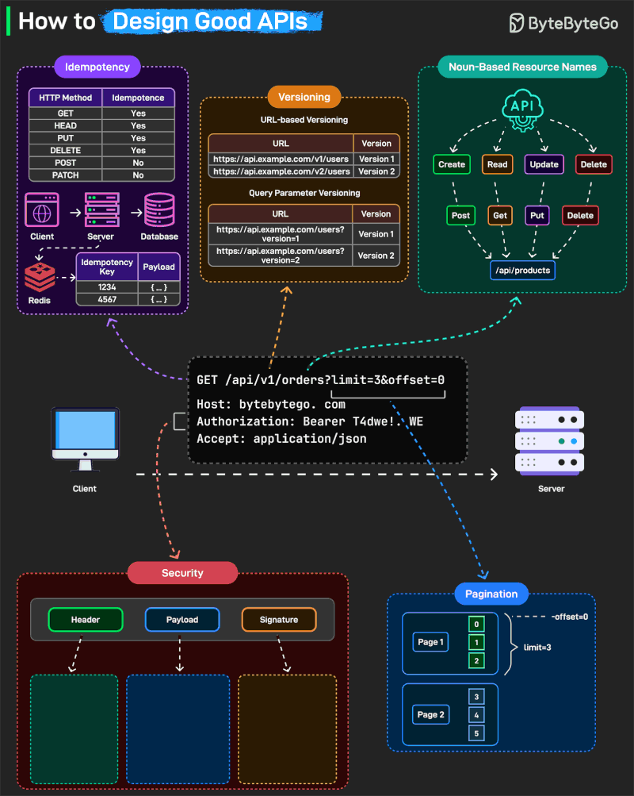
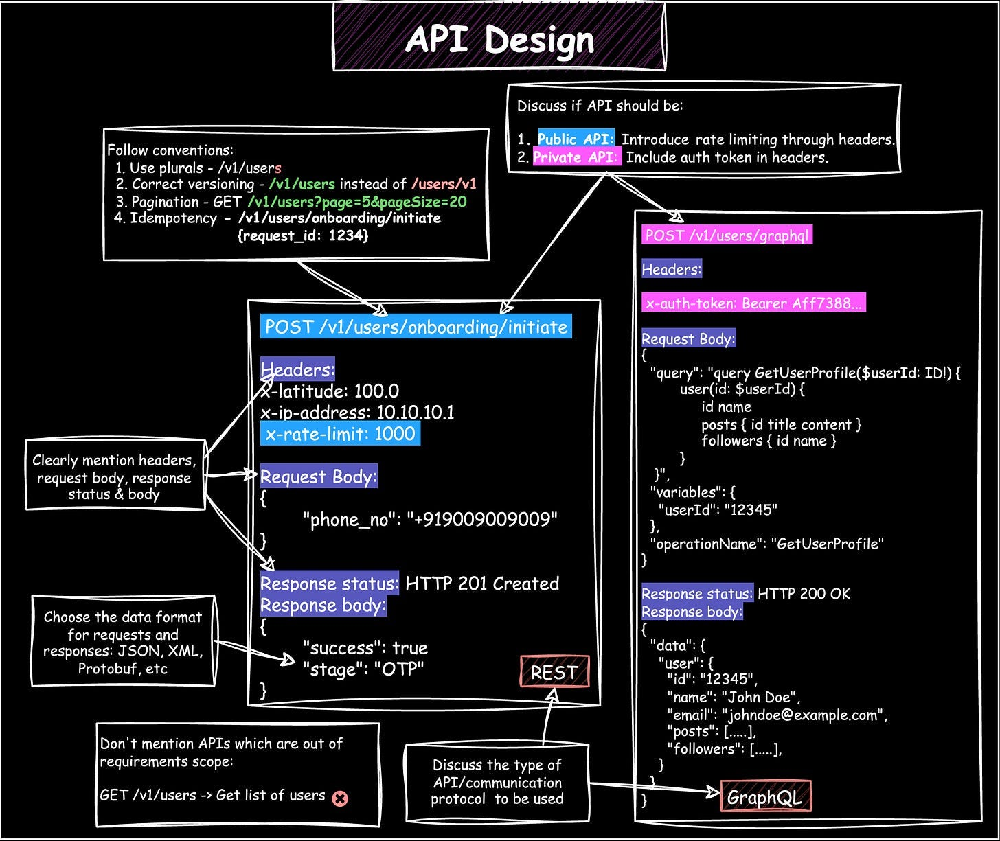

System Design Mastery
Master scalable systems with premium insights
How to Design Good APIs
👉 Interviewer asks:
"How would you design scalable and reliable APIs?"
When designing APIs for production
systems, I focus on five key aspects :
idempotency, versioning, resource modeling,
security, and scalability.
The goal is not just functionality, but ensuring the API is predictable, resilient, and easy to evolve.

🎯 API Design Best Practices Overview
🔹 1. Idempotency — Handling Retries & Duplicate Requests
"In distributed systems, retries are inevitable due to network failures. So I design APIs to be idempotent wherever possible."
Naturally Idempotent:
- GET, PUT, DELETE → naturally idempotent
- POST → handled using idempotency keys
💡 Example:
"In a payments API, I would use an idempotency key stored in Redis. If the same request is retried, the server returns the previous response instead of reprocessing."
🔧 Flow:
Client → POST /payments (Idempotency-Key: abc123)
Server:
- Check if key exists
- → YES → return old response
- → NO → process + store result
Prevents:
- Duplicate payments
- Inconsistent state
🔹 2. Versioning — Ensuring Backward Compatibility
"APIs evolve over time, but we should never break existing clients."
Approach:
- URL versioning → /api/v1/orders
- Gradual migration to /v2
💡 Example:
"Older mobile apps continue using v1 while new clients adopt v2."
Ensures:
- Smooth upgrades
- No production breakages
🔹 3. Resource-Oriented Design — Keep It Predictable
"I design APIs around resources (nouns) rather than actions."
✅ Good:
- GET /users
- POST /orders
- PUT /products/{id}
- DELETE /products/{id}
❌ Bad:
- /getUsers
- /createOrder
"HTTP methods define behavior, which keeps APIs intuitive and consistent."
👉 This is why REST APIs scale across teams
🔹 4. Security — Built-In, Not an Afterthought
"Security is enforced at every layer of the API."
I include:
- Authentication → JWT / OAuth
- Authorization → Role-Based Access (RBAC)
- Input validation → prevent injection
- HTTPS + secure headers
- Request signing (for critical APIs)
🔧 Example:
Authorization: Bearer <JWT_TOKEN>
💡 Example:
"For financial APIs, I'd add HMAC request signatures to prevent tampering."
💡 Real Example:
- Banking APIs use HMAC signatures
- Prevent tampering
🔹 5. Pagination — Handling Large Data Efficiently
❌ Real Problem:
GET /orders → returns 1 million records 😵
- Server crashes
- Slow response
- Bad UX
✅ Design Solution:
GET /orders?limit=10&offset=0
💡 Real Benefit:
- Faster response
- Reduced DB load
- Better UX
"This reduces database load, improves latency, and enhances user experience."
🔹 6. Consistent Request/Response Design
"Consistency is key for developer experience and debugging."
Example:
GET /api/v1/orders?limit=10
Headers:
- Authorization: Bearer <token>
- Accept: application/json
Benefits:
- Easy to integrate
- Easy to debug
- Standardized logs

🔧 Production-Level System Architecture
🔧 Production-Level Enhancements
"Beyond basic API design, I also consider system-level concerns:"
⚡ Rate Limiting
Prevent abuse (Token Bucket / Sliding Window)
⚡ Caching
Use Redis/CDN for frequently accessed data
⚡ Retry Strategy
Exponential backoff to avoid overload
⚡ Circuit Breaker
Prevent cascading failures in microservices
⚡ API Gateway
Centralized auth, logging, throttling
🧠 Interview Tips
- Start with requirements - Don't assume, ask clarifying questions
- Think out loud - Show your reasoning process
- Discuss trade-offs - There's no perfect solution
- Mention specific technologies - Redis, JWT, HMAC, etc.
- Consider security at every layer - Not as an afterthought